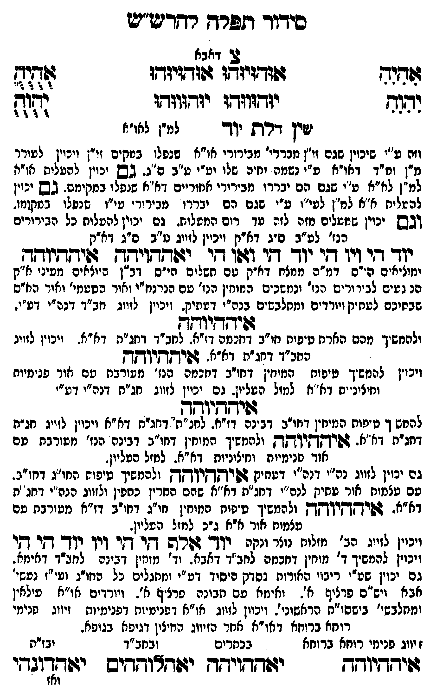

Neue Klartextfassung
[צ' דאבא] === טבלה === [טור ימין] אִהִיִהִ יִהִוִהִ [טור אמצעי] אוּהוּיוּהוּ אוּהוּיוּהוּ יוּהוּווּהוּ יוּהוּווּהוּ [טור שמאל] אֻהֻיֻהֻ יֻהֻוֻהֻ === סוף טבלה === שין דלת יוד [למ"ן לחו"ב] [והם מ"ן שיכוין שהם זו"ן מברורי חו"ב שנפלו במקום זו"ן ויכוין לעורר מ"ן ומ"ד דחו"ב ע"י נשמתו וחיות שלו וע"י ע"ב ס"ג. גם יכוין להעלות חו"ב למ"ן לחו"ב ע"ג שהם ג"כ יבררו מברורי המתיחסים לחו"ב שנפלו במקומם. גם יכוין להעלות חו"ב למ"ן למ"ס ע"ג שהם גם יבררו מברורי מו"ס שנפלו במקומו. וגם יכוין שמעלים מזה לזה עד רום המעלות. גם יכוין להעלות כל הבירורים הנז' לע"ב ס"ג דא"ק ויכוין לזווג ע"ב ס"ג דא"ק] יוד הי ויו הי יוד הי ואו הי איההיוהה איההיוהה [המולידים י"ס דמ"ה ממצח דא"ק עם תשלום י"ס דב"ן שעולים מעיני א"ק הנוגעים לבירורים הנז' ומלבשים המוחין הנז' עם הנרנח"י ואור הפנימי' ואור פנים שבמוחין לעתיק ויורדים ומלבשים בנז' דעתיק. ויכוין לזווג כחב"ד דע"י. [?]] איההיוהה [ולהמשיך מהם הארת טיפת דחכמה חו"ב דחכמה דז"א לכחב"ד דחג"ת דז"א. ויכוין לזווג כחב"ד דחג"ת דא"א.] איההיוהה [ויכוין להמשיך טיפת המוחין דחו"ב דחכמה הנז' מורכבים עם אור פנימיות וחיצוניות דא"א למזל העליון. גם יכוין לזווג חג"ת דנה"י דע"י. [?]] איההיוהה [להמשיך טיפת המוחין דחו"ב דבינה דז"א לכחב"ד דחג"ת דא"א ויכוין לזווג חג"ת דדא"א. ולהמשיך המוחין דחו"ב דבינה הנז' מורכבים עם אור פנימיות וחיצוניות דא"א למזל העליון. [?]] איההיוהה [גם יכוין לזווג נה"י דכח' דעתיק ולהמשיך טיפת המוחין דחו"ג דחו"ב. עם אור מלכות עתיק לבחי' רגלים דא"א שהם תרין כתפין ולזווג כח"ב דנכ"א דז"א. איההיוהה ולהמשיך טיפת המוחין חו"ג דחו"ב דז"א מורכבים עם אור מלכות דא"א ג"כ למזל העליון. [?]] [ויכוין לזווג הנז' מזלות נוצר ונקה] יוד אלף הי הי ויו יוד הי הי [ויכוין להמשיך ד' מוחין דחכמה לכחב"ד דאבא. וד' מוחין דבינה לכחב"ד דאימא. גם יכוין שע"י רבוי האורות נבקע יסוד דע"י ומתגלים כל חו"ג וע"י נצח' דאבא ויס"ס פרק לה'. ואימא עם תבונה פרק לה'. ויורדים חו"ב עליון ומתלבשי' ביססו"ת הראשו'. ויכוין לזווג חו"ב דפנימיות זיווג פנימי רוחא ברוחא דאו"א לבד הזיווג העליון דגופא בגופא. [?]] [זיווג פנימי רוחא ברוחא] איההיוהה איההיוהה [בכתרים] יאהלוההים [בחב"ד] יאהדונהי [נה"י]
Original gegen neue OCR · Niqqud für Vergleich ausgeblendet
Original
[צ' דאבא] === טבלה === [טור ימין] אהיה יהוה [טור אמצעי] אוהויוהו אוהויוהו יוהוווהו יוהוווהו [טור שמאל] אהיה יהוה === סוף טבלה ===K145-001 שין דלת יוד [למ"ן לחו"ב] [והם מ"ןK145-002 שיכוין שהםK145-003 זו"ן מברורי חו"בK145-004 שנפלו במקוםK145-005 זו"ן ויכוין לעוררK145-006 מ"ן ומ"ד דחו"ב ע"י נשמתו וחיות שלוK145-007 וע"י ע"ב ס"ג.K145-008 גם יכוין להעלות חו"ב למ"ן לחו"ב ע"ג שהם ג"כ יבררו מברורי המתיחסים לחו"ב שנפלו במקומם. גם יכוין להעלות חו"ב למ"ן למ"ס ע"ג שהם גם יבררו מברורי מו"ס שנפלו במקומו. וגם יכוין שמעלים מזה לזה עד רום המעלות. גם יכוין להעלותK145-009 כל הבירורים הנז' לע"ב ס"ג דא"ק ויכוין לזווג ע"בK145-010 ס"ג דא"ק] יוד היK145-011 ויו הי יוד הי ואו הי איההיוהה איההיוהה [המולידים מ"ה דת"סK145-012 ממצח דא"ק עם תשלום י"סK145-013 דב"ן שעוליםK145-014 מעיני א"ק הנוגעים לבירוריםK145-015 הנז' ומלבשיםK145-016 המוחין הנז' עםK145-017 הנרנח"י ואור הפנימי'K145-018 ואור פנים שבמוחיןK145-019 לעתיק ויורדים ומלבשים בנז' דעתיק. ויכויןK145-020 לזווג כחב"ד דע"י. ] איההיוהה [ולהמשיךK145-021 מהם הארת טיפת דחכמהK145-022 חו"ב דחכמה דז"א לכחב"דK145-023 דחג"ת דז"א.K145-024 ויכוין לזווג כחב"ד דחג"ת דא"א.] איההיוהה [ויכויןK145-025 להמשיך טיפת המוחיןK145-026 דחו"ב דחכמה הנז' מורכבים עםK145-027 אור פנימיות וחיצוניות דא"אK145-028 למזל העליון.K145-029 גם יכוין לזווג ∅K145-030 חג"ת ∅K145-031 דנה"י דע"י. ] איההיוהה [להמשיך טיפת המוחין דחו"ב דבינה דז"א לכחב"דK145-032 דחג"ת דא"א ויכוין לזווג חג"ת דדא"א. ולהמשיך המוחין דחו"ב דבינה הנז' מורכבים עם אור פנימיות וחיצוניות דא"א למזל העליון. ] איההיוהה [גם יכוין לזווג נה"י דכח' דעתיק ולהמשיך טיפת המוחין דחו"ג דחו"ב. עם אור מלכות עתיק לבחי' רגלים דא"א שהם תריןK145-033 כתפין ולזווג כח"ב דנכ"א דז"א. איההיוההK145-034 ולהמשיך טיפתK145-035 המוחין חו"ג דחו"בK145-036 דז"א מורכבים עםK145-037 אור מלכות דא"אK145-038 ג"כ למזל העליון. ] [ויכוין לזווג הנז' מזלותK145-039 נוצר ונקה] יוד אלף הי הי ויו יוד הי הי [ויכויןK145-040 להמשיך ד' מוחין דחכמה לכחב"דK145-041 דאבא. וד' מוחין דבינה לכחב"דK145-042 דאימא. גם יכוין שע"י רבוי האורות נבקע יסודK145-043 דע"י ומתגליםK145-044 כל חו"ג וע"י נצח' דאבא ויס"ס פרק לה'.K145-045 ואימא עםK145-046 תבונה פרק לה'.K145-047 ויורדים חו"ב עליון ומתלבשי' ביססו"ת הראשו'. ויכויןK145-048 לזווג חו"ב דפנימיותK145-049 זיווג פנימי רוחא ברוחא דאו"א לבדK145-050 הזיווג העליון דגופאK145-051 בגופא. ] [זיווגK145-052 פנימי רוחא ברוחא] איההיוהה איההיוהה [בכתרים] יאהלוההים [בחב"ד] יאהדונהי [נה"י]K145-053
OCR · fehlbar
סידוך דזלרח רדדש"ש 73 דאבא וחנק גוזדזיוצו שודזיזדו לא וב(- יזדווודו יודגוודו (ד([ןK145-001 שין דרת ייך למ"ן לאו"א וזה ע"יK145-002 שיכוין שגםK145-003 זו"ן מבררי' מבירורי או"אK145-004 שנפלו במקיםK145-005 זו"ן ויכוין לטוררK145-006 מ"ן ומ"ד דאו"א ע"ז נשמה וחיה שליK145-007 וע"י ע"ב ם"ג. גבש יכוין להטליחז או"א למ"ן לא"א ע"י שגם הם יבררו מבירורי אחוריים דא"א שנפלו במקימם. בש ינוין להטלית א"א למ"ן לעי"ו ט"י שגם הם יבררו מבירור עי"ו שנפלו בחקומו. ובבש יכיין שמעלים מזה לזב עד רום המעליח.K145-008 גם יכוין להעלוחK145-009 כל הבירורים הנז' לע"ב ס"ג דא"ק ויכיין לזיוג מ"בK145-010 ס"ג דא"ק יד דיK145-011 ויו דד צוך אי וגן די' ישאאויא-ח גלידדיודת ימוליאים הי"ס דמ"הK145-012 ממצח דא"ק טם תשלים הי"סK145-013 דב"ן היוזאיםK145-014 מעיני א"ק הנ נ עים לביר וריםK145-015 הנז' ונמשכיםK145-016 המוחין הנז' טםK145-017 הנרנח"י ואור הטעמי'K145-018 ואור הח"ס שבחיכםK145-019 לעתיק ויורדים ומתלבשים בנה"י דטתיק. ויכייןK145-020 לזווג חב"ד דנה"י דט"י. גהידזדשיגוקךק ולהחשיךK145-021 מהם הארח ט'פיחK145-022 חו"ב דחכמה דז"א. לחב"דK145-023 דחג"ת דא"א. ויבוין לזוונ החב"ד דחג"ת דא"א. בפיד שיקחK145-024 ויכוין ∅K145-025 להמשיך טיפוח המינזיןK145-026 דחו"ב דחכמה הנז' מטורבת טםK145-027 אור פנימיות וחיצינ' יח דא"נזK145-028 למזל העל'.K145-029 גם יכוין לזווג חג"ח דנה"י דע"י שיחקיושד. - להמש ך טיתות החיחין דחו"ב דבזנה דז"א. לחנ"ת' דחגח דא"א ויכוין לזייגK145-030 חג"ת דחג"ת דא"א. דשיךקיךקךק ילהמשיך המיחין דחו"ב דביגה הנז' מעורבח עם אור פנימיוח וחיצידיות דא"א. למ"ל הטליון. גם יכוין לזויג נה"יK145-031 דנה"י דטתיק דשיאךין אק ולהמשיך טיפות החו"ג דחו"ב. עב. שצמות אור. שחיק לנה"יK145-032 דחג"ת דא"א שרם החריןK145-033 כתפין ולזווג הנה"י דחג. ת דא"א. גשיחקיוקקK145-034 ולהמשיך טיפוחK145-035 המוחין חו"ג דחי"בK145-036 דז"א מעורבת טם עצמותK145-037 אור א"אK145-038 ג"כ למזל העליון. ויכיין לזיוג ב' מולוחK145-039 נוצר ונקה יךךך בשר ש קי קר (יך יו- ד[י ד-י ויכויןK145-040 להמשיך ד' מוחין דחכמה לחב"דK145-041 דאבא. וד' מוחין דבינם לחב"דK145-042 דאימא. גם יכוין שע"י ריבוי האורוח נסדק היסידK145-043 דע"י ומחגליםK145-044 כל החו-ג וטיייז נפשי' אבא. ויש"ם פרציף א-K145-045 ואימא עסK145-046 תבונה פרציף א".K145-047 ויורדים או"א עילאין ומחלבשי' בישסו"א הראשוני'. ויכווןK145-048 לזווג או"א דפצימיות דפנימיוחK145-049 זיווג פנימי רוחא ברוחא דאו"א אחרK145-050 הזיווג החיצין דגיפאK145-051 בגופא. ז יווגK145-052 פנימי רוחא ברוחא בכתרים ובחב"ד ובזית שידדיודד יז(דדוידדש יזזדזצושדיש יזוקךוגדי ואזK145-053